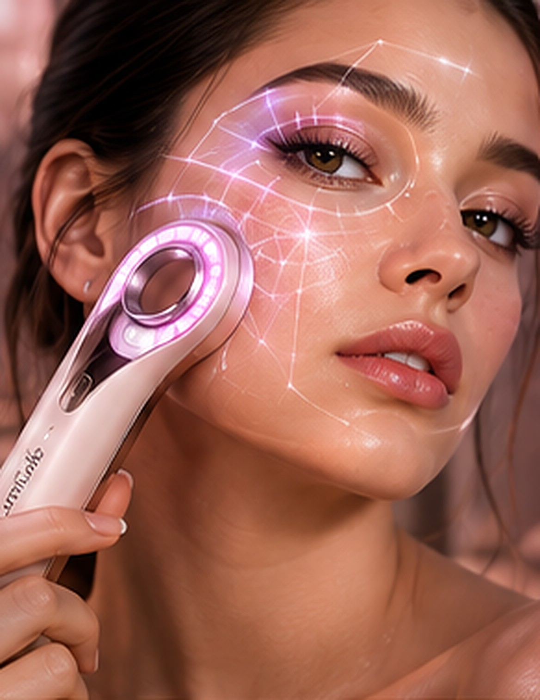
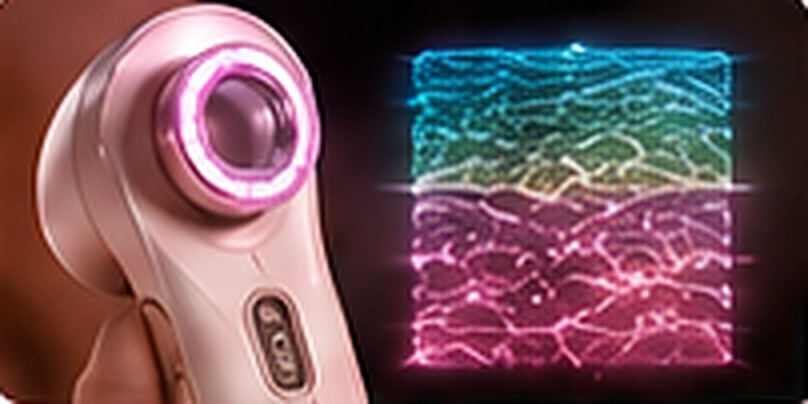
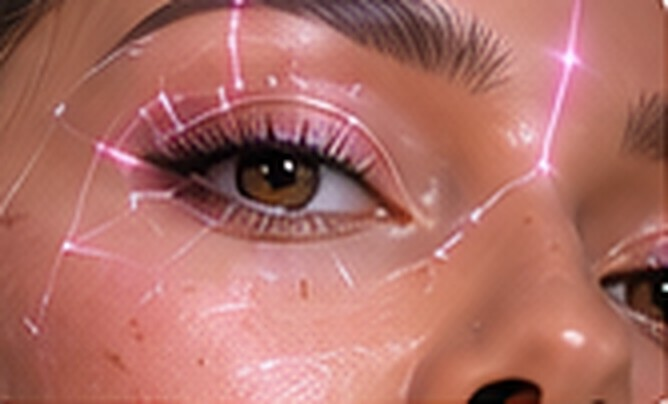
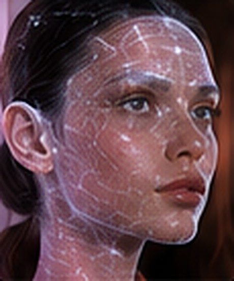
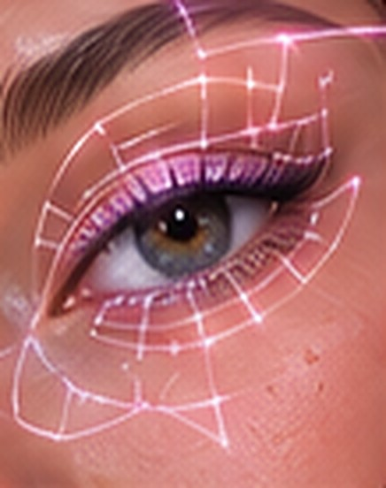
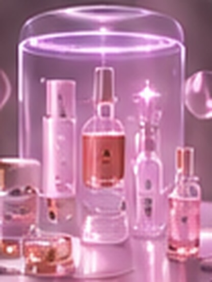
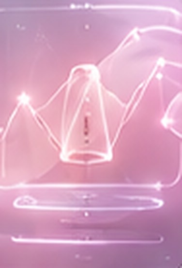
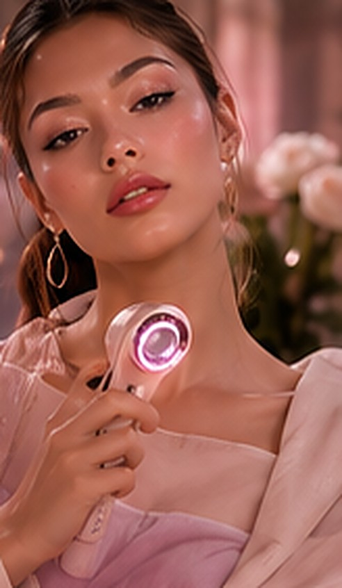

APPAREILS
LumiGuide Pro
Analyse de peau, routine personnalisée et maquillage guidé par application mobile.
299,00 TND
Analyse · Conseil · Transformation
Votre peau. Votre style. Tout dans un seul geste. LumiGuide analyse votre peau, crée votre routine personnalisée et vous guide pas à pas vers le maquillage parfait.
À partir de 299,00 TND · Garantie 2 ans

✦ Analyse de peau✦ Guide maquillage ARUne seule expérience pour prendre soin de votre peau et sublimer votre visage.

Analyse et soin
Une peau saine, c'est la base de toute beauté. Le capteur scanne votre peau et vous propose une routine adaptée : hydratation, sébum, pores, taches, rougeurs.

Maquillage intelligent
Un look parfait, adapté à vous. Choisissez votre style et suivez les guides lumineux selon la forme de votre visage.
Des technologies de pointe pour des résultats visibles.





Du diagnostic au résultat
LumiGuide vous guide à chaque étape, de l'analyse de votre peau à l'application de votre maquillage, pour une beauté plus simple, plus intelligente et plus vous.
Découvrir LumiGuide ProAnalyse de peau, routine personnalisée et maquillage guidé par application mobile.
299,00 TND


LumiGuide Pro, 10 cartouches de soin et 3 mois d'abonnement looks.
598,00 TND
Cliquez sur un visage pour découvrir le look.
Non. LumiGuide propose un conseil beauté, pas un diagnostic médical.
Oui, l'appareil fonctionne avec l'application mobile LumiGuide.
Par câble USB-C, sans fil encombrant.
LumiGuide Pro est garanti 2 ans.